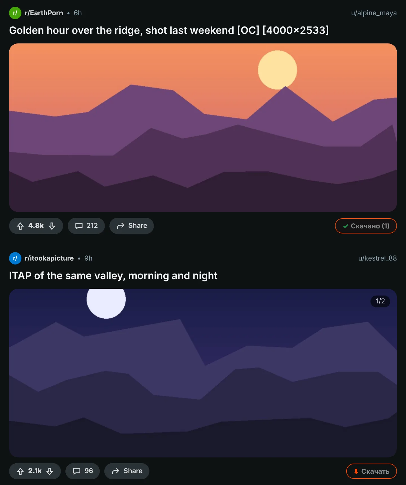
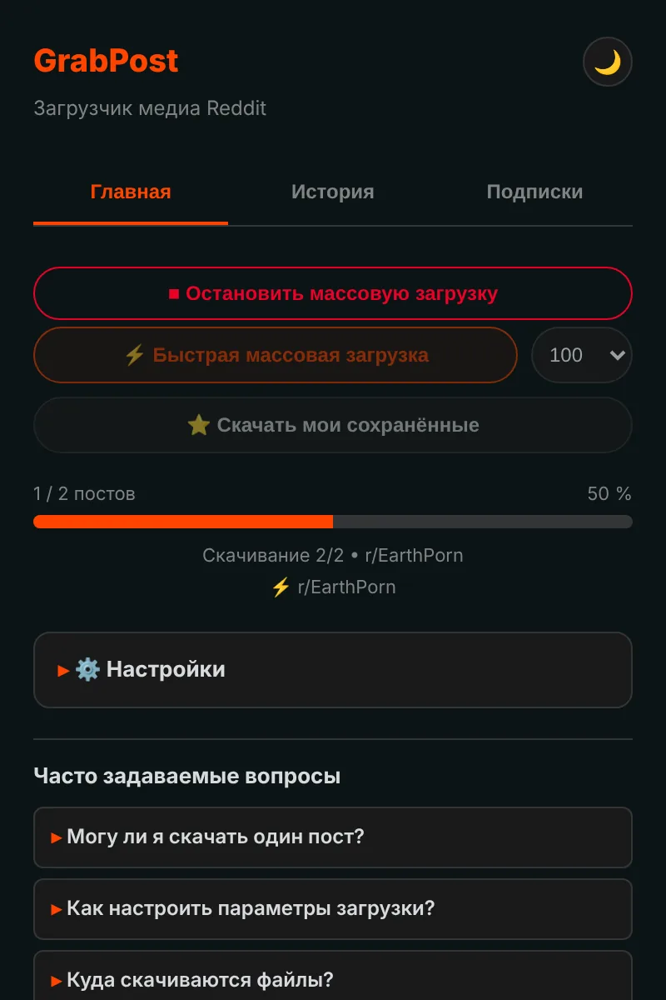
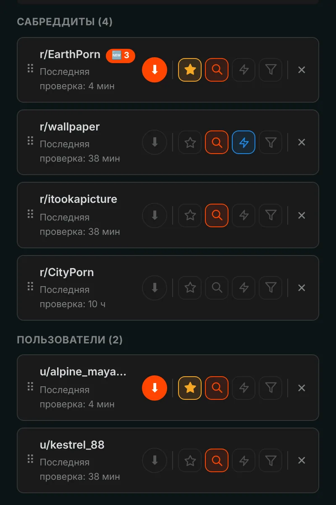
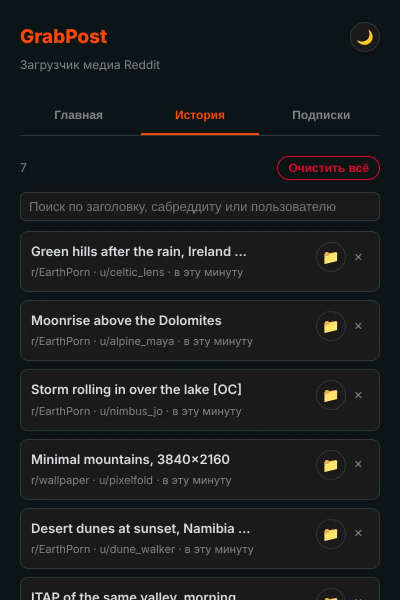

Сохраняйте что угодно с Reddit в один клик.
GrabPost добавляет кнопку «Скачать» к каждому посту на Reddit. Видео сохраняются со звуком, галереи целиком, а целые сабреддиты и профили скачиваются, пока вы заняты другим. Бесплатно и без слежки.
Пока нет в магазинах. Установка с GitHub занимает около минуты.

Нажмите кнопку на посте.
Кнопка на каждом посте
Оранжевая кнопка стоит в строке голосования и «Поделиться» у каждого поста: в ленте, профилях и результатах поиска, на новом и старом Reddit. Работают изображения, галереи, GIF, Redgifs и ссылки на Imgur. Alt+Shift+D скачивает пост в центре экрана.

Целые страницы за раз
Быстрый режим читает сабреддит, профиль, мультиреддит или поиск прямо из данных Reddit, так что прокручивать не нужно. Он пропускает то, что у вас уже есть, и останавливается на ранее скачанных постах. Ваши сохранённые посты скачиваются так же.

Подпишитесь, и новое придёт само
Подписывайтесь на сабреддиты и пользователей и получайте уведомление о новых медиа или позвольте им скачиваться самим. Фильтры по типу медиа, NSFW и ключевым словам. До 10 избранных можно проверять хоть каждые 5 минут.

Каждая загрузка запомнена
История показывает всё, что вы сохранили, и в ней есть поиск, а уже скачанные посты отмечаются на Reddit. Резервные копии создаются автоматически, поэтому переустановка не сотрёт ваш список.

О мелочах уже позаботились
Видео со звуком
Reddit хранит звук в отдельном файле. GrabPost находит его и склеивает прямо в браузере.
Ваши папки и имена файлов
Шаблоны вроде {subreddit}/{user} для папок и {date}_{title} для файлов.
Без дубликатов
Узнаёт ту же картинку, даже если её перезалили в другой сабреддит.
Уживается с IDM
Менеджеры загрузок не смогут перехватить файл и выбросить ваши имена папок.
Терпелив к Reddit
Когда Reddit просит паузу, GrabPost ждёт ровно столько, сколько просят, и продолжает.
15 языков
Расширение и эта страница говорят на вашем языке.
Что вы скачиваете, касается только вас
- Никакой аналитики, слежки и аккаунтов
- Обращается только к Reddit и сайтам, где хранятся его медиа
- История и настройки остаются в вашем браузере
- Открытый код на GitHub
Установка за минуту
GrabPost пока нет в Интернет-магазине Chrome, поэтому он устанавливается вручную. Работает в Chrome, Edge, Brave, Opera и других браузерах на Chromium.
- Скачайте последний grabpost-v…zip с GitHub и распакуйте его в папку, которую будете хранить.
- Откройте
chrome://extensionsи включите Режим разработчика в правом верхнем углу. - Нажмите Загрузить распакованное расширение и выберите распакованную папку grabpost.
- Откройте Reddit. Оранжевая кнопка появится на постах, а значок на панели инструментов откроет панель GrabPost.
Чтобы обновить, замените файлы в той же папке и нажмите кнопку перезагрузки на карточке GrabPost. Настройки и история сохранятся.
Firefox: версия для магазина дополнений уже в пути. А пока zip для Firefox можно временно загрузить через about:debugging.
Вопросы
GrabPost бесплатный?
Да, все функции бесплатны. Если он экономит вам время, можно угостить разработчика кофе.
Куда сохраняются файлы?
В папку загрузок браузера, во вложенную папку на ваш выбор. По умолчанию это Reddit Downloads, а имена файлов начинаются с названия сабреддита.
Нужно ли входить в Reddit?
Только для ваших сохранённых постов и сообществ с возрастным ограничением. Всё остальное работает без аккаунта.
Пропадёт ли история при переустановке?
Нет. Если синхронизация браузера включена, настройки и список подписок вернутся сами. Кроме того, автоматически сохраняется файл резервной копии, а GrabPost умеет восстановить историю по списку загрузок браузера.
Работает ли в Edge, Brave или Opera?
Да. Любой браузер на Chromium, который умеет загружать распакованные расширения, работает с zip для Chrome.
Скачать GrabPost
Пока нет в магазинах. Установка с GitHub занимает около минуты.